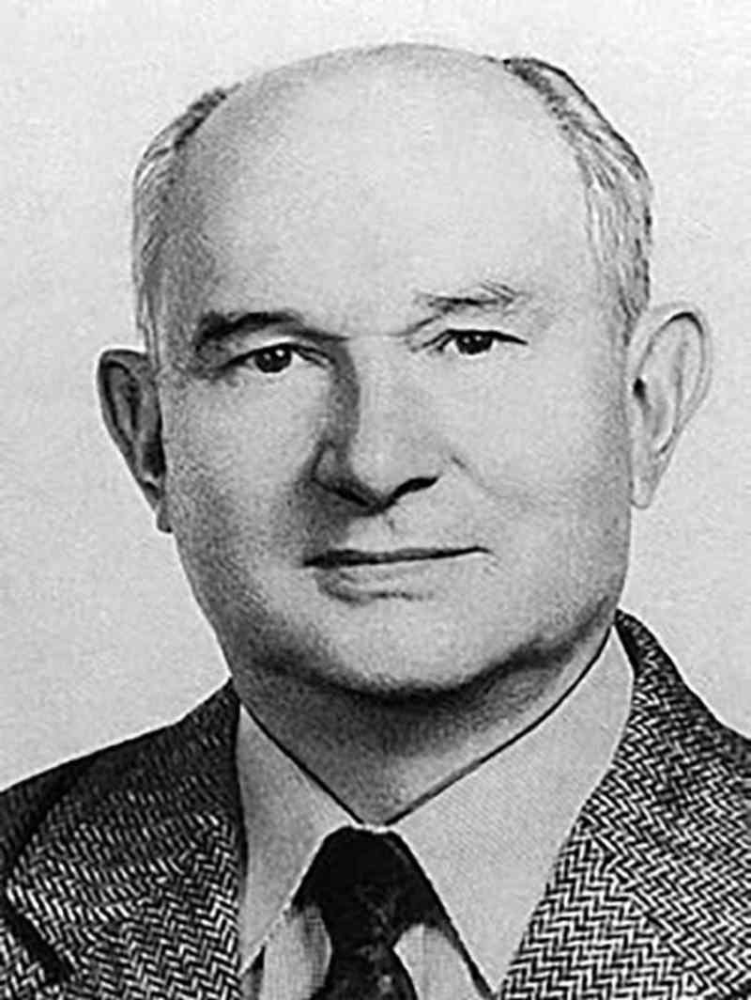
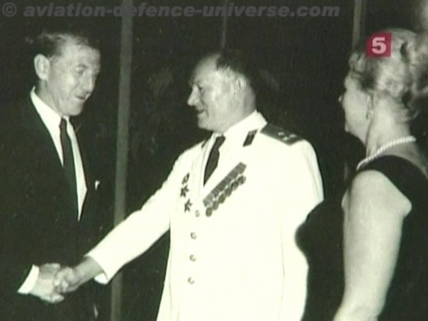

Savvy Security LLC
The Soviet General Who Spied for America
And took his pay in power tools.
He was the most valuable spy the United States ever had. He refused the money. He refused the escape. And in the end, two Americans got him killed.
In 1984, analysts at CIA headquarters were doing what analysts do — grinding through Soviet newspapers and magazines, looking for anything useful.
Someone found a recipe.
Not a policy paper. Not a military journal. A recipe for coot — a scruffy little water bird that Eastern European hunters shoot and, apparently, eat.
And in a building in Langley, Virginia, people went cold.
Because years earlier, CIA had made an arrangement with the best agent it ever ran. If he was ever in trouble — real trouble, the kind you don't come back from — he would publish a recipe for coot.
There it was.

His name was Dmitri Fyodorovich Polyakov, and he was a major general in Soviet military intelligence. To the FBI he was TOP HAT. To the CIA he was BOURBON, and later ROAM. To the KGB investigators who eventually put him in a cell, he was the worst thing that had ever happened to them.
This is his story. Buckle up — it's a good one.
First, let's kill two myths
Almost every version of this story you'll see online gets two things wrong.
Myth 1: "Polyakov was a KGB defector."
Nope. He was GRU — Soviet military intelligence, a completely separate organization from the KGB and often its bitter rival. This matters enormously. The GRU held the Soviet General Staff's actual war plans and doctrine. That's why he was worth more than anyone else. And the delicious, awful irony? It was the KGB — the rival service — that finally hunted him down.
Myth 2: "He defected to the United States."
He never defected. Not once. He was offered a plane, a new identity, and a quiet life in America repeatedly across twenty-five years, and he turned it down every single time. He stayed inside. That's the whole story right there.
A bookkeeper's son from Ukraine
Born 6 July 1921 in Soviet Ukraine, most likely in what's now Luhansk Oblast. His father, Fyodor, was a bookkeeper. Ordinary family. Ordinary childhood. Nothing in the file that would make a background investigator blink.
That ordinariness kept him alive for a quarter of a century.
He entered artillery school in 1939 and graduated in June 1941 — days before Hitler invaded.
Four years of hell
Polyakov's war started on 22 June 1941 and did not stop until Germany did.
He fought as an artillery officer on the Karelian, Western, and 3rd Ukrainian Fronts. He was decorated twice for bravery — the Order of the Patriotic War (2nd Class) and the Order of the Red Star. The citations credit him with destroying an anti-tank gun, three artillery batteries, a mortar battery, and roughly sixty enemy soldiers.
He finished the war as a major, working reconnaissance for the artillery staff of the 26th Army.
Hold onto this part. Every CIA officer who ever tried to explain why he did what he did came back to the war. One of his handlers put it plainly: Polyakov had watched an entire generation die, and he spent the rest of his life measuring the men who ran the Soviet Union against what those soldiers had died for.
He didn't hate Russia. He thought Russia's rulers had betrayed it. There is a difference, and it's the difference this entire story turns on.
The hardest job in the trade
After the war came the Frunze Military Academy — think West Point for officers already in the field — then General Staff and GRU training. Around 1951, he entered military intelligence.
His specialty was illegals.
If you don't know the term: illegals are deep-cover officers who operate abroad with no diplomatic protection. No embassy to run to. No immunity. If they get caught, nobody's coming. They live for years under invented identities.
Polyakov spotted them, trained them, dispatched them, and ran them. He knew their real names, their cover stories, their radio schedules, and their families.
Remember that. It comes back at the end of this story, and it hurts.
New York, and the thing that broke him
From 1951 to 1956 he was posted to New York, running the GRU's illegal network in the United States under UN cover. He brought his wife Nina and their sons. The younger boys grew up American — playgrounds, English, the whole thing.
He came back for a second tour in 1959, now a colonel, now deputy GRU chief for illegal operations in the entire United States.
And then one of his sons got sick.
Here's where the sources split, and I'm going to be straight with you about that:
- Russian accounts: the youngest boy needed surgery costing about $5,000. Polyakov went to his GRU superior, who cabled Moscow. Moscow said no. The child died.
- American reference accounts: the boy had a heart defect, the first operation failed, a specialist recommended a second, the mission refused to pay. The child died.
- A KGB officer's version: it was the eldest son, it was polio, and the issue wasn't money — it was permission to put him in a New York hospital. Permission denied. The child died.
Different son. Different illness. Different obstacle.
Same ending: a Soviet officer's child died because the Soviet state wouldn't spend on him — in a city where the treatment was available a few blocks away.
Shortly afterward, Polyakov walked into American hands.
He never once said this was his reason. To his handlers and to his interrogators he talked about ideology, corruption, the war. Both things can be true. People rarely lead with the real reason. Sometimes they never say it at all.
8 November 1961: the day everything changed
He didn't walk into an FBI office. Too dangerous, too obvious.
Instead he approached a U.S. Army general commanding First Army at Governors Island and asked for an introduction. The general arranged a quiet meeting with FBI Special Agent John Mabey.
The Bureau gave him the codename TOP HAT and could hardly believe what was happening.
And Polyakov did not show up empty-handed. Look at his first four months:
- 8 Nov 1961 — six Soviet cipher clerks working in U.S.-based missions
- 26 Nov 1961 — forty-seven GRU and KGB officers then operating in America
- 19 Dec 1961 — GRU illegals and the officers running them
- 24 Jan 1962 — American agents on the GRU payroll, plus the illegals he'd held back
- 29 Mar 1962 — photo identifications of Soviet intelligence officers
He didn't test the water. He emptied the network.
Later that year, sailing to Europe with his family aboard the Queen Elizabeth, he met FBI officers on board and gave up four American military officers taking Soviet money.
Then he went home to Moscow, and the Americans lost him for over two years.
Their solution? A personal ad in the New York Times. Addressed to "MOODY — Donald F." It ran ten days straight in May 1964.
(Here's the wild part: that detail was later confirmed by Pravda, the Soviet Communist Party newspaper, in its own 1990 write-up of the case. One of the strangest cross-confirmations in Cold War history.)
Rangoon, and proving he was real
Contact resumed in 1965 when Polyakov was posted to Burma, running the Soviet signals-intercept station. Since the FBI's authority stops at the border, CIA took over the case and renamed him BOURBON.
CIA's opening position was suspicion, and honestly? Fair. A GRU colonel who volunteers, refuses money, and hands over an entire illegals network in four meetings is either the greatest windfall in intelligence history or a very expensive trap.
So Polyakov gave them something they could check — something that couldn't be faked and couldn't be walked back.
- Frank Bossard — a guided-missile researcher inside the British Ministry of Aviation, selling secrets to Moscow. Arrested 1965. Convicted.
- Jack Dunlap — a U.S. Army sergeant working as a courier at the NSA. One of the worst insider breaches the agency had ever suffered.
Then, from Rangoon, he handed CIA everything Soviet intelligence had collected on the North Vietnamese and Chinese militaries — at the peak of the Vietnam War.
Suspicion over.
The document that opened China
In 1969 he returned to Moscow, and by December he was running the GRU's China desk — in charge of Soviet intelligence operations against Beijing.
So he photographed the file.
What those documents proved was that the Sino-Soviet split wasn't posturing. It was deep, real, and getting worse.
A CIA analyst working Sino-Soviet relations used that material — without knowing where it came from — to conclude with confidence that the rift would last. That assessment fed straight into the thinking of Henry Kissinger and Richard Nixon.
Nixon went to China in 1972.
One of the biggest geopolitical realignments of the twentieth century rested partly on documents a Soviet colonel photographed in a Moscow office on his lunch break.
General Polyakov
1973: posted to New Delhi as GRU station chief under military attaché cover.
1974: promoted to major general — the only Soviet general officer known to have spied for the United States over a sustained period.
His CIA handler in India was a man named Paul Dillon. Their meetings happened along the Yamuna River, Dillon pretending to fish while a hidden recorder captured Polyakov's rapid-fire briefings — peacocks screeching in the background.
(Side note that will wreck you: Dillon's daughter, Eva Dillon, later wrote a book about all this. Her main source? Polyakov's surviving son, Alexander — who'd had no idea what his father really was. Two children of two spies on opposite sides, sitting down decades later to piece together what happened to their families.)

The general's stars opened doors. And here's what came out:
"Military Thought"
Polyakov delivered more than 100 issues of the classified edition of Voyennaya Mysl — the Soviet General Staff's internal journal, where senior commanders argued candidly with each other about doctrine.
Washington was tearing itself apart over one question: do Soviet commanders think they can win a nuclear war?
Military Thought answered it from the inside.
They didn't. They were as terrified as we were.
Robert Gates — later CIA Director and Secretary of Defense — said this material showed how the Soviets actually talked to each other about nuclear war when nobody was watching.
That right there is the reason people say Polyakov kept the Cold War from turning hot. He didn't stop a missile. He deleted a misperception. And misperception is exactly what starts wars between nuclear powers.
The shopping list
As a general, he got access to a document several inches thick: the master list of Western military technology the USSR wanted to acquire — by theft or by trade.
Richard Perle, then Assistant Secretary of Defense, called it breathtaking. Roughly 5,000 separate Soviet military programs depended on Western technology.
That single document rewrote how Washington understood the Soviet war machine: not a self-sufficient superpower, but a system structurally dependent on stealing from its enemy. It drove the Reagan-era crackdown on technology exports.
The missiles
Technical data on Soviet anti-tank missiles, handed over in the 1970s, was still saving lives in 1991 — when American troops faced Soviet-supplied Iraqi systems in the Gulf War.
Soldiers who never heard his name owed him.
By the end, his material filled 25 file drawers at CIA headquarters.
The tradecraft (this part is genuinely incredible)
- He overruled the CIA. He refused to use dead drops inside Moscow — judged them too vulnerable — and told his handlers so. By the late 1970s they'd stopped arguing. He set his own meetings, his own signals, his own schedule. They treated him less like an agent and more like an instructor.
- A 2.6-second burst. CIA's tech shop built him a handheld device: type your message, encrypt it, then fire the whole thing in 2.6 seconds. He rode a tram past the U.S. Embassy and shot the transmission into the station windows as he went by. Soviet counterintelligence later reconstructed the route on sketch maps.
- Blank film. He stole special film from the GRU's own supply room — film that only developed with a chemical known to him and his handlers. Processed normally, it came out completely blank. He took the fake hollow rocks from the same stockroom, too.
- A fishing rod with a secret compartment. Because of course.
- The coot recipe. He wrote for Soviet hunting magazines in retirement. Which made the emergency signal invisible. Until 1984, when it appeared.
To this day, nobody is entirely sure what he was trying to tell them.
About the money
This is the part that convinced even the skeptics.
Polyakov accepted about $3,000 a year.
Three thousand. For the most valuable intelligence source either superpower ever ran. And he refused more — because he understood that unexplained money is what gets you caught, and he intended to survive.
Russian estimates put his total compensation across twenty-five years at around $94,000.
He preferred payment in stuff: Black & Decker power tools, work overalls, fishing tackle, shotguns. He was a weekend carpenter and a serious hunter.
He also asked for piles of small items — lighters, pens, nice watches — which he handed out to GRU colleagues who did him favors.
Read that again. He used CIA to fund his own internal patronage network inside Soviet military intelligence. And it worked.
His handlers found him baffling. He barely drank. He barely smoked. He was faithful to his wife — at a time when Western intelligence assumed vices were the handle you grabbed a Soviet officer by. What he actually cared about was his wife, his sons, and his grandchildren.
His practical ambition was that his boys be well-educated and well-placed. That required his own promotion. So CIA quietly fed his career — supplying minor secrets he could report as wins, and handing him two Americans he could present as his own recruitments. Both were CIA-controlled.
Yes: the United States was actively promoting its own spy up through the ranks of Soviet military intelligence.
June 1980: "Don't wait for me"
When Polyakov was suddenly recalled from New Delhi to Moscow, his CIA officer panicked and started babbling about asylum — you're always welcome in our country, I hope one day we can have dinner in America.
Polyakov looked at him and told him not to wait. He said he was never going to the United States. He wasn't doing this for America.
"I was born a Russian, and I will die a Russian."
The American asked what would happen if he were ever caught.
Polyakov answered with two words in Russian: bratskaya mogila. A common, unmarked grave.
The betrayal
Here's the gut punch.
Soviet counterintelligence never caught Dmitri Polyakov. He was sold. Twice. By Americans.
Robert Hanssen — November 1979
Three years into his FBI career, Hanssen volunteered to the GRU and handed over, among much else, the identity of a general inside Soviet military intelligence who was working for the Americans.
That was Polyakov.
The Soviets pulled him back from India in 1980 and investigated him. But his war record, his Party standing, and his reputation as an old-line hardliner protected him. Russian accounts say military counterintelligence officers pushed for a deeper investigation and were shut down by a KGB deputy chairman, who declared that an intelligence general could not possibly be a traitor.
Polyakov felt it coming anyway. At one point he destroyed all his espionage materials, expecting arrest.
It didn't come. Not yet.
Aldrich Ames — June 1985
CIA's own counterintelligence chief for Soviet operations sold Moscow a list of the Agency's assets. Polyakov was on it. Hanssen — now working for the KGB — confirmed it.
Two moles. Two agencies. Working independently, neither knowing about the other, converging on the same man.
7 July 1986
Polyakov had retired in 1980, officially on health grounds. He took a civilian job in the GRU personnel department — which, incredibly, gave him access to the personnel files of the entire service.
On 6 July 1986 he turned sixty-five and threw a birthday party at a restaurant.
While he was at that party, KGB officers searched his home. In roughly ten hidden caches they found American communications gear, microfilm, and CIA operational instructions.
The next day he was summoned to the Military-Diplomatic Academy for what he was told was a ceremonial honor. He arrived in full dress uniform.
Alpha Group took him at the door. They immobilized him completely, stripped him and re-dressed him on the spot — on the assumption that a man with his experience might be carrying poison.
It was done so cleanly that CIA didn't know what had happened to him for years. He simply stopped existing.
Lefortovo
He cooperated with his interrogators — reportedly hoping he'd be kept alive to be run back against the CIA in a double game.
Soviet officers later published an account of those sessions. Asked whether he felt anything for the illegals he had personally trained and then sent to their deaths, Polyakov reportedly said: "That was my job."
And then asked for a cup of coffee.
In another session he described the entire twenty-five years as an unending torment of conscience — a grave mistake he'd been ready to confess many times, stopped only by what would happen to his wife, children, and grandchildren.
His interrogators thought that second version was theater. Honestly? It's impossible to know which one was real. It's not clear a man in a Lefortovo interrogation room has a real version left.
The end
27 November 1987 — the Military Collegium of the USSR Supreme Court sentenced him to death and stripped him of his rank and every decoration he'd earned under German fire.
15 March 1988 — the sentence was carried out.
May 1988 — at the Moscow Summit, President Reagan personally raised Polyakov's case with Mikhail Gorbachev, asking for a pardon or a swap.
He was told the man had been executed two months earlier.
How the world found out
In January 1990, Pravda ran a piece about a captured spy it identified only as "Donald F."
Days later, Michael Wines of the New York Times matched the details against Soviet diplomatic records and named him.
CIA clipped that article and filed it. The copy was declassified in August 2022 and sits in the Agency's public reading room today — anyone can read it.
(Worth noting: there is no declassified CIA file on Polyakov. His actual case file is still classified. Anyone online claiming to quote it is quoting something else.)
His son Petr, a Soviet Foreign Ministry official, reportedly later took his own life.
Nobody knows where Polyakov is buried.
But wait — was he real?
I'd be doing you dirty if I skipped this.
Polyakov's authenticity was argued about inside U.S. intelligence for forty years.
James Jesus Angleton, CIA's legendary counterintelligence chief, was convinced TOP HAT was a plant. Peter Wright of MI5 and writer Edward Jay Epstein argued he fed America false data on Soviet missile accuracy that warped arms control talks. Tennent Bagley, a former Soviet Bloc counterintelligence chief, made the most sophisticated version of the case: that Polyakov was dispatched as a KGB disinformation channel in 1961, and then genuinely flipped in Burma in 1965.
CIA formally reviewed him at least three times — under Colby in the '70s and Casey in the '80s. The reviews couldn't substantiate the charge that he was a plant.
And here's the argument nobody has ever answered:
The Soviet state secretly tried him and shot him.
Governments do not execute their own successful deception assets. They don't do it in secret, and they don't lie about the timing to a visiting American president.
Every CIA officer who's ever spoken publicly about him — Woolsey, Gates, Grimes, Vertefeuille, Olson — says he was the real thing. Woolsey's verdict has become the case's epitaph: of all the agents America recruited in the Cold War, Polyakov was "the jewel in the crown."
And now the part nobody likes
You should know what he looks like from Moscow, because it's the mirror image and it isn't stupid.
Russian counterintelligence credits Polyakov with betraying 19 illegals, more than 150 foreign agents, and identifying 1,500 officers as Soviet military intelligence.
Those illegals were people he personally selected and trained. He knew their names and their families. Exposure meant execution.
His photograph hangs today in the FSB museum at Lubyanka — an old man in the dock — as the centerpiece of the Russian services' gallery of traitors. Modern Russia has never softened on him by an inch.
Both things are true at once. He gave Washington intelligence that plausibly prevented a nuclear catastrophe. And he sent men and women to their deaths who had never done a thing to him.
Any honest telling holds both. This one does.
So what do we make of him?
Strip away the romance and here's what's left:
- He proved Soviet commanders didn't think nuclear war was winnable — at exactly the moment American planners feared they did.
- He made the opening to China possible.
- He exposed 5,000 Soviet programs dependent on stolen Western technology.
- He gutted Soviet human intelligence against the West for three decades.
For about $3,000 a year. In power tools. While turning down every offer of escape.
And the final, unbearable irony: Soviet counterintelligence didn't beat him. He was destroyed by the two worst traitors in American history — one FBI, one CIA — who between them threw away a quarter-century of the finest agent work either service ever did.
The system that failed Dmitri Polyakov was ours.
There's no star on the wall at Langley with his name on it. There's no grave to visit. No country will claim him. He said he did it for Russia, and Russia shot him for it.
That's what unsung actually means.
Sources include CIA's declassified FOIA reading room (documents 06545650 and 06545651), the DOJ Inspector General's 2003 report on Robert Hanssen, National Security Archive interviews with CIA officer Sandy Grimes and FBI agent John Mabey, Elaine Shannon's 1994 TIME investigation, Eva Dillon's Spies in the Family (2017), Grimes and Vertefeuille's Circle of Treason (2012), Tennent Bagley's Spy Wars (2007), and Soviet-era counterintelligence accounts published in Moscow in 1999.
Share this one. He earned it.